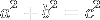

Pythagorean theorem
A visual explanation by Victor Powell for Setosa
What follows in an interactive walk through of Euclid's proof of the Pythagorean Theorem.

Let
ABC
be a right-angled triangle having the angle
BAC
right.
I say that the square on
BC
equals the sum of the squares on
BA
and
AC.
Describe the square
BDEC
on
BC,
and the squares
GB
and
HC
on
BA
and
AC.
Draw
AL
through
A
parallel to either
BD
or
CE,
and join
AD
and
FC.
Since each of the angles
BAC
and
BAG
is right, it follows that with a straight line
BA,
and at the point
A
on it, the two straight lines
AC
and
AG
not lying on the same side make the adjacent angles equal to two right angles, therefore
CA
is in a straight line with
AG.
For the same reason
BA
is also in a straight line with
AH.
Since the angle
DBC
equals the angle
FBA,
for each is right, add the angle
ABC
to each, therefore the whole angle
DBA
equals the whole angle
FBC.
Since
DB
equals
BC,
and
FB
equals
BA,
the two sides
AB
and
BD
equal the two sides
FB
and
BC
respectively, and the angle
ABD
equals the angle
FBC,
therefore the base
AD
equals the base
FC,
and the triangle
ABD
equals the triangle
FBC.
Now the parallelogram
BL
is double the triangle
ABD,
for they have the same base
BD
and are in the same parallels
BD
and
AL.
And the square
GB
is double the triangle
FBC,
for they again have the same base
FB
and are in the same parallels
FB
and
GC.
Therefore the parallelogram
BL
also equals the square
GB.
Similarly, if
AE
and
BK
are joined, the parallelogram
CL
can also be proved equal to the square
HC.
Therefore the whole square
BDEC
equals the sum of the two squares
GB
and
HC.
And the square
BDEC
is described on
BC,
and the squares
GB
and
HC
on
BA
and
AC.
Therefore the square on
BC
equals the sum of the squares on
BA
and
AC.
Therefore in right-angled triangles the square on the side opposite the right angle equals the sum of the squares on the sides containing the right angle..
Text from Euclid's Elements, Proposition 47